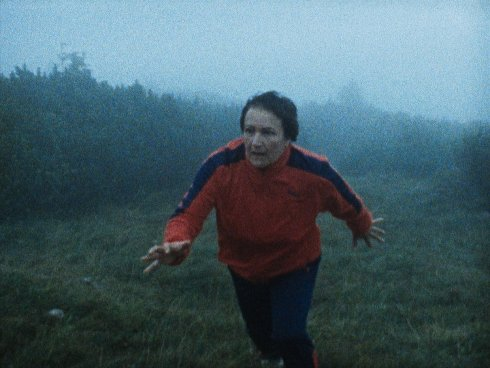

Die Kinder der Toten

Kelly Copper, Pavol Liška
Freitag 11 okt | 22.30 | Werkstattkino
Christoph Schlingensief meets Guy Maddin, in dieser Adaption von Elfriede Jelineks Gothic Novel. Der groteske Zombie-Reigen des Romans zeigt sich hier auf stummem Super-8-Wiedergänger-Material. Alles beginnt mit einer fröhlichen Zusammenkunft im Gasthof Alpenrose. Es folgt ein übermütiger Ausflug in einem Reisebus und ein tödlicher Verkehrsunfall, bei dem alle Touristen sterben. Drei von ihnen versuchen in das Leben zurückzukehren. Sexwütige, fleischfressende, übereinander herfallende Nationalsozialisten mit Hakenkreuzarmbinde sind der schauerliche Höhepunkt des Horror-Heimatfilms.
Copper und Liska verfilmten ohne Romankenntnis geradewegs den englischsprachigen Wikipedia-Eintrag, in dem es über das „Magnum Opus” von Jelinek heißt: „All the characters are undead in the process of decomposition and are presented as mute zombies in the manner of splatter films. They are incapable of speech, obsessed with sex, and brutal. They are confronted with the mass of Holocaust victims, who wish to achieve new life.” Inszeniert wurde mit befreiend wirkender Durchgeknalltheit. (Dunja Bialas)
Kelly Copper geb. 1971 in Gainesville, Florida, USA. 1996 gründete sie mit Pavol Liska in New York das Nature Theater of Oklahoma. Die Kinder der Toten ist ihr erster Film. |
| Pavol Liška geb. 1973 in
Skalica, Tschechoslowakei. Die Kinder der Toten ist sein
erster Film. |